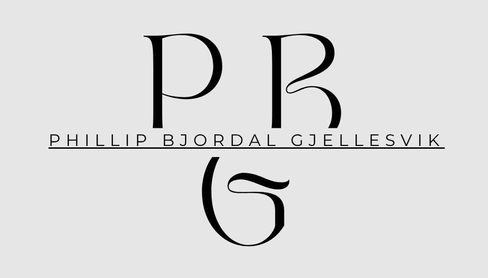
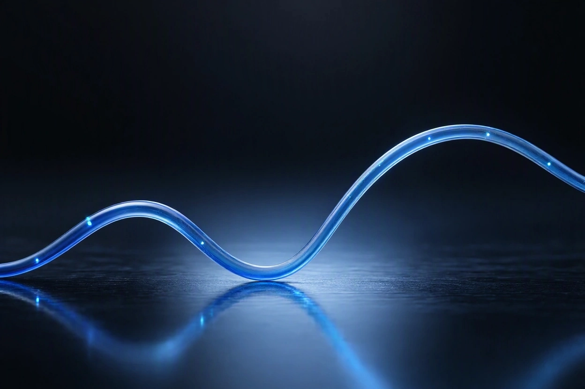

Bachelor of Business Administration (BBA)
BI Norwegian Business School, Oslo, Norway
2024 to 2027

Business student at BI Norwegian Business School, following the markets that matter: Bitcoin and the US yield curve.
I am a bachelor student in business administration with a strong interest in financial markets, particularly Bitcoin and the US Treasury yield curve. I combine an international education with hands-on experience in customer service, delivery and transport, and I enjoy negotiation, problem solving and working with people.
I was born in Singapore and spent the first nine years of my life there. Growing up in such an international city shaped how I see the world, and it gave me an early sense that people, languages and cultures can look very different from one place to the next.
When I was nine, my life moved to Norway, and I went to school here all the way until high school. It was a big change, but it is also where I built my foundation: my friends, my Norwegian, and my understanding of how things work here.
When high school came around, I took a big step and moved to Baltimore in the United States. Finishing high school in America meant adapting to a new school system and a new culture on my own, and it strengthened my English and my independence.
After graduating, I moved back to Norway. Because my degree was from an American school, I needed an extra year to have it recognised here. I used that year well and worked at the convenience store Joker while I studied, which taught me responsibility, customer service and how to work in a team. I kept working there through my gap year as well.
In January 2024 I travelled to Asia and visited several countries. During the trip I was in a serious moped accident that left my foot crushed. I had to learn to walk again, and I was later diagnosed with arthritis in several bones in my foot. It was a long and difficult process, and it was hard to get through mentally. It is still something I manage today, and it has taught me patience and how to keep going when progress is slow.
After my operation and rehabilitation, I returned to Norway and started at BI Norwegian Business School in the summer of 2024. Along the way I also needed knee surgery and physical therapy, which pushed back some of my plans and was tough on my mental state. I kept going, finished the treatment I needed, and stayed on track with my studies.
I wanted to work alongside my studies, but it was hard to find a job that did not need me to stand for long periods because of my pain. That is why I became a taxi driver. It lets me earn my own money, meet many different people, and still keep up with my degree.
I am now in my final year at BI and I expect to graduate in 2027. Everything along the way, from the moves between countries to the injuries and the recovery, has made me more adaptable, more resilient and more determined to build a career I am proud of.

The yield curve inverted in 2022 and stayed inverted for a long time, yet the US has not had a clear recession. Economists point to several possible reasons. Most likely it is a mix of them.
This is a summary of common explanations, not a forecast and not financial advice. Nobody knows for certain which reasons matter most.
Loading...
Top stories from Yahoo Finance. This page updates automatically every hour.
Headlines and links from Yahoo Finance. Stories open on Yahoo Finance in a new tab.